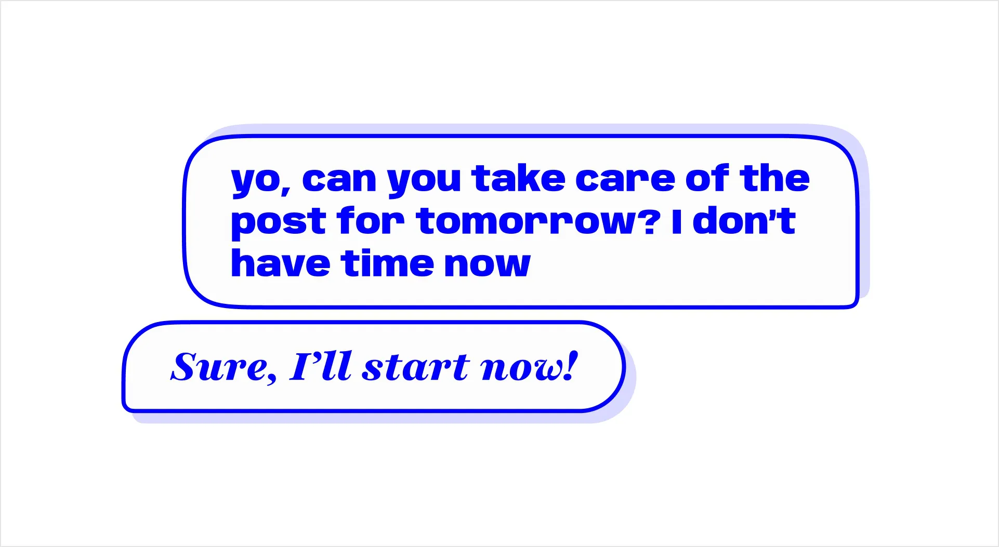

Team Up: A personal experience Having too much work on your shoulders is never a good idea, but it’s something that will eventually happen when you’re the only one that can perform certain tasks in your team, especially when the team is growing from every department except yours. This is my experience with the transition from “the only one” to “one of the ones”.
When I joined the company I’m working for, three years ago, I was the only designer on the recently formed Brand and Communications Team. It was a scary moment: I had to define the graphic route that we should take, with little to no experience in the matter.
Things started slowly: one small social media project would take weeks to complete. There was a lot to think about, workflows that had to be created and decisions that had to be taken, plus: everything was kind of a mystery. Eventually, I'd found my speed. Something that before could take two weeks to finish would now take less than two days. Templates improved, workflows got faster, production quality rose, and I was finally happy with our production line. However, the pressure on my shoulders kept growing. Every new format and every new idea also meant more work for me. Gladly, I work with a team that understands the need for a pause and gives me space and time to work, but my desire for more and better would not let me rest. I would keep accepting new projects, and the workload would keep increasing.
Fast-forward to a few months ago, when we decided that it was finally time to hire another designer to join me on this journey. The first few weeks were different. I was in charge of explaining the workflow, the content, the team structure, the general idea behind the company, and the specific idea behind the brand. My job was to put this new person on a somewhat similar level to mine, but I had set myself the goal of making it in a matter of months, not years.
Training a new colleague can be frustrating at times. I would hear questions to which I hadn’t yet found the answer. There was a need to prepare their path before they even crossed the starting point and a constant—and negative—urge to help with every little detail, not giving them space or time to try on their own. The hardest, however, was to let go of my work and accept that this new person can and will do a good job.
To my surprise, all of this took way less than expected. My new colleague was now able to perform a lot of the tasks that I had on my list. The goal that I had set earlier had been reached.
Learning to share your work also means learning to share the spotlight, when there’s one. Admittedly, this was not something that I was ready to face. After years of doing this alone, having someone else share the compliments on the work was a strange emotion. I knew that it wasn’t more than a selfish thought, a childish manifestation of my ego looking for attention and approval. Receiving praise for something that I did in collaboration with someone else did not feel as good as if I had done it alone. However, being aware of this feeling made it easier to control it, after all, learning to do so is a necessity whenever the team grows. Happily for me—and my mental health—I was able to put these feelings behind me in no time, allowing me to share the work and praises with my new colleague and giving myself a well-deserved, stress-free work environment.
Sharing your work will also decrease the Bus Factor. Let’s say that — and hope not — you get run over by a bus, there’s no one to take over your work while you’re recovering, assuming that the bus was not going very fast…
But now, add to the equation someone who can take on your work while you’re out, and the projects don’t need to fully stop. This means that once you get back to work, there’s way less unread messages and pressure to finish up content because your colleague managed to do something about it.
Allowing yourself to share the workload is also a great way to improve your work’s quality. Working alone made me lazy, sometimes even uncreative, and worst of all: an improvement procrastinator. Although I am very thankful for my team’s feedback—thanks team!—having another designer give me ideas and criticize my work did wonders. Alone, there’s always the temptation to sit in a comfortable place and stop improving after a while. Together, however, there’s a healthy competitive relationship that leads to success. It works almost like a ladder, every time your colleague does something on the right path, you go and try to surpass that, thus creating a greater piece in the process. Of course, this competitiveness needs to be controlled, otherwise, it can become harmful to you and your colleague, which in turn will also worsen your job quality and eventually your personal life. Before my colleague, I was doing what I consider to be a good job, but after the hire, I recognized that the work’s output never looked so good.

Finally, with someone able to take on a good portion of the projects that before would consume all my time, I was finally able to focus on other topics: now I could think about our design strategy, clean up the mess that was my years-alone folder organization, redefine workflows, find new and better tools for the job, etc... I can, at last, focus on the communication design on a macro scale, allowing the company to graphically evolve.
Of course, one has to be aware that hiring a new person is not always possible. However, when possible, not leaving anyone alone will not only improve that person’s life, it will also improve that position’s output quality. For the more skeptical minds out there, see it like this: instead of having one person running at 100% of their capacity, constantly overwhelmed with work and pressure, you can have two people running at 75% each, in a healthier and more relaxed work environment. This will not only add a 50% focus capacity to the final output, but will also decrease the burnout probability of each worker, thus improving even more the final work’s quality.